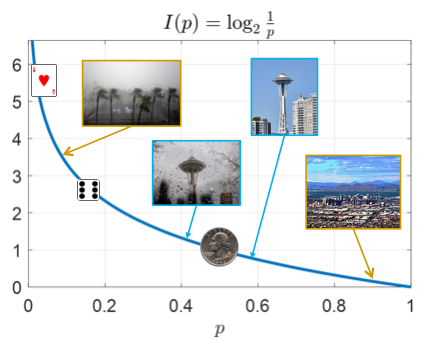

Quantifying Information

Both images contain the same fraction of black and white pixels, but the one on the right is far more disordered than the first. We would need far more information to describe the pattern of pixels on the right than on the left. This idea is connected to the signal’s entropy.
Probability and information
Recall from section 1 of this chapter that the information conveyed by the occurrence of an event is related to its probability:
Now, we will formally define the information $I(E)$ of an event \(E\), based on the properties information should have. This definition of information for an event will extend naturally to discrete random variables, allowing us to describe information in terms of probability distributions.
Information as a quantity
Let $I(E)$ denote the amount of information conveyed by the statement ‘Event $E$ has occurred’. What properties should $I(E)$ have?
- It should be nonnegative: observing something has occurred should not increase uncertainty. So \[ I(E) \geq 0 \]
- Obvious statements do not carry information. In other words, \[P(E) = 1 \Rightarrow I(E) = 0\]
- The amount of information should decrease as probability increases, as surprising statements carry more information. \[P(E)\uparrow\ \Rightarrow \ I(E)\downarrow\]
- If we observe two independent events, the information conveyed by both occurring should be the same as the sum of the information obtained from each event, \[P(E_1E_2) = P(E_1)P(E_2)\ \Rightarrow \ I(E_1E_2) = I(E_1) + I(E_2)\]
The properties above relate the information content of knowing ‘$E$ has occurred’ to the probability of $E$. We thus assume that $I(E)$ is only a function of the probability of $E$. In other words, for an event $E$ with probability $p$, we can write $I(E)=I(p)$. (Note that here we are abusing our notation by using $I$ with two different meanings. In one case, it is a function whose argument is an event and in the other it is a probability. But since the distinction is clear from the context and this simplifies our notation, we allow it.)
The properties above, also tell us what properties the function $I$ must have:
- $I(p)\ge0$
- $I(1)=0$
- $I(p)$ is decreasing in $p$.
- $I(p_1p_2) = I(p_1)+I(p_2)$.
The next proposition tells us that these conditions are enough to determine how we should define information.
Proposition: The set of functions that satisfy these conditions are the functions of the form
\[I(p) = \log_b{\frac1{p}},\]where the base $b$ of the logarithm can be any number larger than 1.
You can see the proof of the proposition below.
The base of the $\log$ is arbitrary and determines the unit of information, similar to measuring time using seconds, hours, etc. Base 2 gives the information in bits (bit was popularized by Shannon in his paper, suggested by Tukey). We use base 2, unless otherwise stated. It is important to note that a bit has two meanings now:
- A binary digit, i.e., a number that can be 0 or 1
- The unit of information
Of course, these two are closely related as we will find out.
We are now ready to define the information of an event.
Let’s confirm that this choice satisfies the four properties:
- \(I(E)\) is nonnegative since \(P(E) \leq 1\).
- \(I(E)\) is decreasing as \(P(E)\) increases.
- \(I(E)\) decreases to 0 as \(P(E)\) increases to 1.
- If \(E_1, E_2\) are independent, then \(P(E_1E_2) = P(E_1)P(E_2)\Rightarrow I(E_1E_2) = \log_2{\frac1{P(E_1,E_2)}}= \log_2{\frac1{P(E_1)P(E_2)}} = \log_2{\frac1{P(E_1)}} + \log_2{\frac1{P(E_2)}} = I(E_1) + I(E_2)\).
The plot of the function $I(p)=\log_2\frac1p$ is given on the right, along with points on the curve for the examples in the table. The weather probabilities are based on past weather data.

| Event | Probability | Self-information (bits) |
|---|---|---|
| A card drawn randomly from a deck is the ace of hearts |
1/52 | 5.70 |
| Tomorrow, it will rain in Phoenix | 36/365 | 3.34 |
| A die shows 6 | 1/6 | 2.58 |
| Tomorrow, it will rain in Seattle | 158/365 | 1.21 |
| A coin flip results in heads | 1/2 | 1 |
| Tomorrow, it will not rain in Seattle | 207/365 | 0.81 |
| Tomorrow, it will not rain in Phoenix | 329/365 | 0.15 |
Note that self-information of an event is not related to how valuable the information is to us. It measures information content in the context of a specific probability experiment. We may care about the weather in Phoenix or not but that’s not measured by self-information. That’s subjective and difficult to quantify but as we will see mutual information provides a quantification of usefulness of information to an extent.
We have $I(p_1p_2) = I(p_1) + I(p_2)$. Taking the derivative with respect to $p_2$ yields $$I(p_1p_2) = I(p_1) + I(p_2) \Rightarrow \frac{d}{dp_2} I(p_1p_2) = \frac{d}{dp_2} (I(p_1) + I(p_2)) \Rightarrow p_1f'(p_1p_2) = I'(p_2).$$ Let $p_2 = 1$ to get $p_1f'(p_1) = I'(1)$ for all $p_1$. Hence, $I(p_1)=\frac{I'(1)}{p_1}$. This is an example of a differential equation, which we can solve by integration: $$\int_{x}^{1}I'(p_{1})dp_{1}=I(1)-I(x) \Rightarrow I'(1)\int_{x}^{1}\frac{1}{p_{1}}dp_{1}=-I(x),$$ where we have used the fact that $I(1)=0$. Then $$I(x) = I'(1)\ln x.$$
We have thus obtained $I(x)$ up to a multiplicative constant. Since the $I$ is decreasing, we need $I'(1)<0$. With foresight, let us set $I'(1) = -\frac1{\ln b}$, where $b>1$. Then $$I(x) = -\frac{\ln x}{\ln b} = \log_b\frac1x.$$ It can be easily verified that the four conditions are satisfied by this function.
- Pick five different numbers from 1 through 70; then select one Mega Ball number from 1 through 25.
- A player wins the jackpot by matching all five numbers and the Mega Ball number.
- I win the jackpot.
- I do not win the jackpot.
- The card is black
- The card is a spade
- The card is a Jack
- The card is the Jack of spades
- The card is not a spade
- The card is not a Jack
- The card is not the Jack of spades
- $X\ge 3$
- $Y\le 2$
- $Z\le 5$
- $X\ge 3,Y\le 2$
- $X\ge 3,Z\le 5$
- $Y\le 2,Z\le 5$
Entropy
So far, we have talked about the amount of information in events. Now, we’d like to extend this definition to random variables, which would make the concept of mathematical information so much more powerful. As an example, suppose $X$ tells you the weather in Seattle (sunny vs cloudy/rainy/snowy) and $Y$ tells you the weather in Phoenix. Intuitively, which of these carries more information? I would argue $X$ carries more information since it is much less predictable. I’d bet people in Phoenix do not check the weather as often as those in Seattle to see if they need to take an umbrella with themselves. Our definition of information for random variables should agree with this observation.
Information of a binary variable
First, suppose we have a fair coin flip, \(P(X=0) = P(X=1) = 0.5\). How much information is conveyed by a single coin flip? For \(X = 0\), we have \(I(0) = \log_2(1/0.5) = 1\) bit. For \(X = 1\), we have \(I(1) = \log_2(1/0.5) = 1\) bit.
If I tell you what $X$ is I’m giving you 1 bit of information, regardless of whether $X=0$ or $X=1$. In other words, $X$ carries 1 bit of information.
Now, suppose the two possibilities don’t have the same probabilities. For example, $X$ may represent the weather (sunny vs cloudy/rainy/snowy) in Pasadena, CA, with \(P(🌞) = 0.75, P(🌧) = 0.25\).
- For \(X = 🌞\), we have \(I(🌞) = \log_2(1/0.75) = 0.415\) bits.
- For \(X = 🌧\), we have \(I(🌧) = \log_2(1/0.25) = 2\) bits.
In one case, the weather conveys less than 1 bit, and in the other (rarer) case, more than 1 bit. So how much information does knowing $X$ give you?
When outcomes have different probabilities, how do we define the amount of information in the random variable? One way to approach this is to consider a sequence of trials. For example, suppose below is a sequence of weather conditions for $N$ days, assuming independence:
\[🌞🌞🌧🌞🌞🌧🌞🌞🌞🌞🌧🌞🌞🌞🌧🌞\cdots🌞🌞\]We can think of the amount of information conveyed by the weather in one day as the total amount of information divided by the number of days. There are approximately $3N/4$ sunny days, each with $I(🌞)=0.415$ bits of information, and $N/4$ cloudy/rainy days with $I(🌧)=2$ bits of information. So the total information is
\[\frac{N}4 I\left(🌧\right) + \frac{3N}4 I\left(🌞\right) = \left(\frac14 I\left(🌧\right) + \frac{3}4 I\left(🌞\right)\right)N = 0.81N\ bits.\]On average, the information for each day is 0.81 bits. Thus, the average amount of information is
\[P(🌧) I\left(🌧\right) + P(🌞)I\left(🌞\right).\]For the weather in Phoenix, we have the following probabilities: $P(🌞)=0.1, P(🌧)=0.9$. And for Seattle, we have $P(🌞)=0.57, P(🌧)=0.43$.
Find the average amount of information for weather in each city.Thus as expected weather in Seattle has more information per day. It is true that the rainy outcome in Phoenix has high self-information, but that outcome is rare, so it doesn’t contribute a lot to the total information.
Average information: Entropy
Given our previous discussion, computing the average information of a random variable is as simple as combining the information for each possible outcome, weighted by the probability of that outcome:
This term entropy arises from statistical physics and was suggested to Shannon by John von Neumann:
My greatest concern was what to call it. I thought of calling it ‘information,’ but the word was overly used, so I decided to call it ‘uncertainty.’ When I discussed it with John von Neumann, he had a better idea. Von Neumann told me, ‘You should call it entropy, for two reasons. In the first place your uncertainty function has been used in statistical mechanics under that name, so it already has a name. In the second place, and more important, no one really knows what entropy really is, so in a debate you will always have the advantage.
Claude Shannon, Scientific American (1971), volume 225, page 180.
Binary Entropy
The entropy of a binary random variable has a especially simple form. Suppose the random variable $X$ takes one value with probability $p$ and another with probability $1-p$. Then, its entropy is
\[H(X)=H_b(p) = p \log_2 \frac1p + (1-p) \log_2 \frac{1}{1-p}\]Note that we have used $H_b(p)$ to denote the binary entropy. This makes it easier to refer to even if we don’t give our random variable a name. As examples of binary entropy, recall the weather in Seattle and Phoenix.

|

|
As we can see, the highest entropy of a binary random variable is 1 bit, which is achieved by two equally likely outcomes. This makes sense since that maximizes the uncertainty.
Now let’s see a few examples of entropy of random variables.
Let $X$ and $Y$ denote two independent die rolls and let $Z$ be their sum. Note that if we know $X$ and $Y$, then we know $Z$. So $X$ and $Y$ together provide at least as much information as $Z$. Lets see if this is reflected in their entropies.
Since $3.27<2.58+2.58$, we see that $X$ and $Y$ together have at least as much information as $Z$. On the other hand, while $Z$ provides some information about $X$ and $Y$, if we know $Z$, we don’t necessarily know $X$ and $Y$. So the entropy of $Z$ is less than the sum of the entropies of $X$ and $Y$.
Properties of entropy
Entropy has the following properties.
- The entropy of a random variable only depends on its distribution. In other word, two random variables with the same distribution have the same entropy.
- Entropy is nonnegative.
- If the random variable can only take one value (in other words, if it’s deterministic), then its entropy is 0. This case has the minimum amount of uncertainty.
- The entropy of a random variable that can take $M$ different values is at most $\log_2 M$, which is obtained when all outcomes are equally probable. This case has the maximum uncertainty.
Recall that if a random variable takes $M$ values, and we would like to represent each of the possible values for with a sequence of bits (of the same length), we need $\lceil\log_2 M\rceil$ bits. So if all values are equally likely, the number of bits needed is very close to the entropy. As we will see, this is not a coincidence and holds more generally.
Joint entropy
If there are two random variables $X$ and $Y$, what is the total amount of information provided by these two together? Is it equal to the sum of the two entropies?
We can define entropy for more than one random variable,
\[H(X,Y) = \sum_{x,y}P(X=x,Y=y)\log_2\frac1{P(X=x,Y=y)},\]which is the average information of $X$ and $Y$ together. We can extend this definition easily to more than two random variables by considering their joint distribution. For example, $H(X,Y,Z)$ is the amount of information provided by $X,Y,Z$.
As an example, let $X$ be the rank of a card drawn at random and $Y$ be its color. Then, each outcome such as ($X=$5, $Y$ = black) has probability $\frac 1{26}$. So
\[H(X,Y) = \sum_{x,y}P(X=x,Y=y)\log_2\frac1{P(X=x,Y=y)}=26\left(\frac1{26}\log_2\frac1{1/26}\right)=\log_2 26 = 4.7\]Recall that the entropy of the identity of the card is 5.7 bits. So the pair (rank, color) has less information. This makes sense because if you know rand and color, you don’t know which of two possibilities was actually chosen.
Now let $Z$ determine the suit of the card. This time each pair such as ($X=$5, $Z=$ ) has probability $\frac1{52}$. So
) has probability $\frac1{52}$. So
5.7 bits is the same as the entropy of the identity of the card, which makes sense since the pair (suit, rank) fully determines the card.
For two random variables $X$ and $Y$, what is the relationship between $H(X)+H(Y)$ and $H(X,Y)$? In the previous example, we found that $H(X,Y)=H(X)+H(Y)$ but $H(X,Z)<H(X)+H(Z)$. What is the reason for this difference? In the case of $X$ and $Y$, they are independent and the information they provide do not overlap. This is not the case for $X$ and $Z$. For example, if you know $X=1$, then you already know that $Z$ cannot be 0. Visually, we can represent this as
 |
 |
Entropy of random sequences
So far we have talked about the entropy of random variables. But as discussed before digital signals are represented by random sequences. So we must extend the definition of entropy to sequences. The entropy of a sequence of length $N$,
\[X_1,X_2,\dotsc,X_N\]is the joint entropy of its elements,
\[H(X_1,X_2,\dotsc,X_N).\]But it is usually more meaningful to find the entropy per sequence symbol, i.e.,
Below, we consider entropy per symbol for iid sequences and Markov chains.
Entropy of iid sequences
Because of independence, the entropy per symbol of iid sequences is simply equivalent to the entropy of one of the random variables:
\[\frac1N H(X_1,X_2,\dotsc,X_N)=\frac{H(X_1)+H(X_2)+\dotsm+H(X_N)}N=H(X_1).\]Because of this, we use interchangeably the entropy of a single random variable and the entropy per symbol of an iid sequence of repeated trials involving that random variable.
Let $X$ be a random English letter, where we assume the ‘alphabet’ consists only of capital letters and space. First let us assume $X$ takes all possible values with equal probability. Then
\[H(X) = \log_227 = 4.75\ bits.\]This is also the entropy per symbol of a simple model of English text in which each letter has equal probability.
Now let us assume that the letter is chosen based in its probability in actual English text as shown below (estimated using Ulysses):
In this case we can show that the entropy is
\[H(X) = 4.12\ bits,\]which is again also the per symbol entropy of a text whose every symbol is an iid sample of $X$. We have thus found two approximations for the per symbol entropy of English text.
Entropy of Markov chains
Consider a Markov chain with transition matrix $A$. Suppose the states of the Markov chain are $1,2,\dotsc,M$ and let $q_i$ be the probability of state $i$ in the stationary distribution. Then, for large $N$, the entropy per symbol defined in \eqref{eq:entRate} can be found as
We will skip the proof of this fact but the following example provides some intuition.
Suppose the following transition matrix describes the Markov chain for weather in some city
\[A = \left(\begin{array} 0.75&.25\\.5&.5\end{array}\right),\]where state 1 represent sunny and state 2 represent rainy. For instance, $P(🌧\vert🌞)=0.25$. It turns out that the stationary distribution of this Markov chain is
\[q_1=q_🌞 = \frac23,\quad q_2=q_🌧 = \frac13.\quad\]A simulated sequence from this Markov chain is
🌞🌞🌞🌞🌧️🌞🌞🌧️🌞🌞🌞🌞🌞🌞🌞🌞🌧️🌧️🌧️🌧️🌞🌞🌞🌞🌧️🌞🌧️🌞🌞🌞🌧️🌞🌧️🌞🌞🌞🌞🌧️🌧️🌧️🌧️🌧️🌧️🌞🌞🌞🌧️🌧️🌞🌞🌧️
What is the amount of information in each day of this weather? If today is sunny, then tomorrow is sunny with probability 0.75 and cloudy with probability 0.25. So the entropy of tomorrow’s weather in this case is
\[0.75\log_2\frac1{0.75}+0.25\log_2\frac1{0.25} = 0.81\ bits.\]On the other hand, if the weather is rainy today, then tomorrow is sunny with probability 1/2 and rainy with probability 1/2. In this case, the entropy of tomorrow’s weather is
\[0.5\log_2\frac1{0.5}+0.5\log_2\frac1{0.5} = 1\ bit.\]So we have two different values depending on today’s weather. Noting that 2/3 of the days are sunny and 1/3 cloudy, we can take the weighted average of these two values:
\[(2/3)(0.81) + (1/3)(1) = 0.87\ bits.\]But this is the same as what \eqref{eq:MCEnt} would give us:
\[q_1\left(A_{11}\log_2\frac1{A_{11}}+A_{12}\log_2\frac1{A_{12}}\right)+q_2\left(A_{21}\log_2\frac1{A_{21}}+A_{22}\log_2\frac1{A_{22}}\right).\]Let us consider two other example. If the transition matrix is
\[B = \left(\begin{array} 0.5&.5\\.5&.5\end{array}\right),\]then the weather actually becomes iid. A simulated example is
🌞🌞🌞🌞🌞🌞🌧️🌧️🌞🌧️🌞🌧️🌧️🌞🌧️🌞🌞🌧️🌧️🌞🌧️🌞🌧️🌞🌞🌧️🌞🌧️🌞🌞🌞🌧️🌞🌧️🌧️🌧️🌞🌞🌞🌧️🌞🌧️🌧️🌞🌞🌞🌧️🌞🌞🌞🌧️
If the transition matrix is
\[C = \left(\begin{array} 0.9&.1\\.5&.5\end{array}\right),\]then the stationary distribution is $P(🌞)=5/6, P(🌧️)=1/6$. A simulated sequence is shown below:
🌞🌞🌞🌞🌞🌞🌞🌞🌞🌧️🌧️🌞🌞🌞🌞🌞🌧️🌞🌞🌞🌞🌞🌞🌞🌞🌞🌞🌞🌧️🌞🌞🌞🌞🌞🌞🌞🌞🌧️🌞🌧️🌧️🌞🌞🌞🌞🌞🌞🌞🌞🌞🌞
It seems that the uncertainty of the weather produced by transition matrix $B$ is the largest, followed by $A$ and then $C$. Let us see if the entropy per symbol of these Markov chains agree with this assessment.
As we have seen, we can use Markov chains to create models for English text:
- 1st order Markov chain: ON IE ANTSOUTINYS ARE T INCTORE ST BE S DEAMY ACHIN D ILONASIVE TUCOOWE AT TEASONARE FUSO TIZIN ANDY TOBE SEACE CTISB/span>
- 2nd order Markov chain: IN NO IST LAT WHEY CRATICT FROURE BERS GROCID PONDENOME OF DEMONSTURES OF THE REPTAGIN IS REGOACTIONA OF CRE
- 3rd order Markov chain: THE GENERATED JOB PROVIDUAL BETTER TRAND THE DISPLAYED CODE, ABOVERY UPONDULTS WELL THE CODERST IN THESTICAL IT DO HOCK BOTHE MERG. (INSTATES CONS ERATION. NEVER ANY OF PUBLE AND TO THEORY. EVENTIAL CALLEGAND TO ELAST BENERATED IN WITH PIES AS IS WITH THE )
For each case, we can find the entropy per symbol. As the models become better at representing the structure of English, we get a better (and generally lower) estimate of the entropy. For the third-order model, the entropy per symbol is 2.8 bits, which is much lower than the entropy of 4.76 bits for the iid model with equal probabilities. As we will see, this becomes important for data compression.
Entropy of real signals
Let’s examine a typical image, such as the one below, left. There are lots of details in the image, and so a lot of information. But when we zoom in (right), there is also a lot of redundancy, as pixels close to each other typically have similar colors. Data compression will take advantage of this redundancy to reduce storage/transmission requirements.
How much information does this image carry?
So far we have talked about entropy for abstract sources of information: random variables such as random card draws or die rolls and English text in general. But in practice, we deal with specific files such as images, audio, and texts.
Two interpretations of entropy:
- Abstract: average information among outcomes according to a probability distribution.
- Empirical: average information among realizations (e.g., pixels) according to relative frequencies.
So, how do we find the empirical entropy of an image? Let’s consider the following black and white image of an eye as a simple example.

The image has \(31 \times 24 = 744\) total pixels with 571 black and 173 white pixels. So based on relative frequency, $P(B) = 571/744 = 0.767$, $P(W) = 173/744 = 0.233$. The resulting entropy is
\[0.767\times 0.382 + 0.233\times 2.104 = 0.783\]bits per pixel. And the information of the whole image is approximately $0.783\times 744 = 583$ bits.
Note that the maximum amount of entropy occurs when there are an equal number of black and white pixels, which would lead to 1 bit/pixel or 744 bits for the whole image.
The independence assumption
In the eye image above, white pixels usually appeared next to other white pixels and similarly for black pixels. For simplicity, we ignored this fact and computed entropy as if pixels are independent. This adversely affects our estimation of entropy. There are two ways to improve this by taking into account relationships between pixels:
- Joint probability: Group sets of adjacent pixels (e.g., a $4\times4$ block) and find the entropy of the distribution of blocks. Blocks that are mostly black or mostly white will have a higher probability. This method is effective, although it cannot take into account the relationships between adjacent blocks.
- Markov chains: Consider the conditional probability of each pixel given its surroundings. Black has a higher probability if the previous pixel is black and white has a higher probability if the previous pixel is white so we could use a Markov chain as a model. There are also more complex conditional models.
Both ways use the information we can get from other pixels, resulting in a better entropy estimate and better compression.